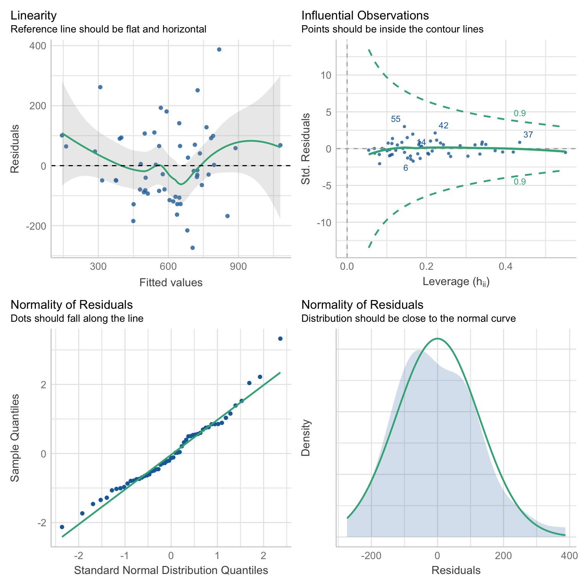

For our statistical analysis, we consider a linear regression. In particular, let \(S\) denote the set of PUMAs in NYC, and let \(y_s\) denote our outcome of interest for PUMA \(s \in S\). We consider the latent variable model \[ y_s = \xi_s' \beta + \varepsilon_s \] for each \(s \in S\), where \(\xi_s\) is a vector of PUMA-level means of data from the census and \(\beta\) is a vector of parameters. There are two challenges in considering such a model: (1) we know historically that NYC neighborhoods, particularly those within boroughs, are subject to spatial correlation; and (2) because the census data is recorded at the interview level, we do not observe the group-level means \(\xi_s\).
In order to address (1), we employ heteroscedasticity-robust White standard errors to deal with the potential threat of spatial correlation. We find that all of our coefficient estimates retain their significance under the adjusted standard errors, and hence we leave this check on robustness to the appendix.
More interesting is the challenge presented in (2). For each \(s \in S\), suppose we observe \(i \in \{ 1, \ldots, n_s \}\) individual-level interviews. It is natural to consider the group mean \[ \bar{X}_s \equiv \frac{1}{n_s} \sum_{i = 1}^{n_s} X_{is}. \] However, as shown in Croon and Veldhoven (2007), it is generally the case that using the observed group mean \(\bar{X}_s\) as an estimator of \(\xi_s\) will lead to biased regression coefficients. Thus, we address (2) by following the procedure outlined by Croon and Veldhoven to re-weight our group means and obtain adjusted group means \(\tilde{X}_s\). In particular, let \(\hat{\Sigma}_{\xi \xi}\) and \(\hat{\Sigma}_{\nu \nu}\) denote the usual ANOVA estimates of the between- and within-group variation matrices, respectively. The adjusted group means are then given by \[ \tilde{X}_s \equiv \bar{X}' (I - W_s) + \bar{X}_s' W_s, \quad \text{where} \] \[ W_s \equiv \left( \hat{\Sigma}_{\xi \xi} + \hat{\Sigma}_{\nu \nu} / n_s \right)^{-1} \hat{\Sigma}_{\xi \xi} \] and \(I\) denotes the identity matrix. Intuitively, the weight matrix \(W_s\) acts as a shrinkage estimator, shrinking the observed group mean \(\bar{X}_s\) in the direction of the citywide mean \(\bar{X}\). Observe that as the between-group variation dominates relative to the within-group variation, \(W_s\) converges to the identity matrix \(I\), and hence the adjusted group mean \(\tilde{X}_s\) converges to the observed group mean \(\bar{X}_s\). That is, the better we can see the neighborhood signals through the noise, the less we need to penalize the observed means.
With our unbiased estimates \(\xi_s\) in tow, we then proceed to model selection. Given that there are \(|S| = 55\) PUMAs, we must be careful to avoid overfitting our model. As such, we employ a stepwise algorithm with an objective function of minimizing the AIC. In this way, we penalize models subject to overfitting and obtain an appropriately parsimonious selection of predictors. Now that our theoretical concerns have been addressed, we can finally discuss our findings!
A word of caution: If the reader is considering such a macro-micro model for their own research, be advised that there is a typographical error in the Croon and Veldhoven paper. When estimating the unbiased between- and within-group covariance matrices, they inadvertently swap the divisors for their MSA and MSE. In large samples, this error can lead to weight matrices \(W_s\) that are not positive definite, which in turn leads to a non-convex combination of \(\bar{X}\) and \(\bar{X}_s\), which further leads to immense woe for the programmer who cannot understand why his or her unbiased estimates for non-negative random variables are somehow negative.
Because death rates are relatively unreliable, and because vaccination rates are percentages that often attain their upper bound (i.e., 100%), our primary model employs hospitalization rates by PUMA as its dependent variable. Moreover, because the vaccine changed the dynamic of other health outcomes, we further restrict to hospitalizations up and until December 31, 2020. Below is a summary of our key finding from our optimal linear model.
# pull in health outcomes to be merged
outcome_by_year <-
# read in health outcomes by year
read_csv("./data/outcome_puma_by_year.csv") %>%
# harmonize puma variable for merge
rename(puma = puma10)
# standardize inputs for consistent interpretation
standardized_data <-
# read in unbiased group means for inputs
read_csv("./data/unbiased_group_means.csv") %>%
# apply the scale function to appropriate columns
mutate_at(-c(1, 2), ~ c(scale(., center = FALSE))) %>%
# merge with health outcomes
merge(outcome_by_year, by = "puma")
# store optimal linear model
best_model <- lm(
puma_hosp_rate_2020 ~
# unemployment rate
employment_not_in_labor_force +
# fraction of spanish speakers
language_spanish +
# fraction of english speakers
language_english +
# fraction of those born in the us
birthplace_us +
# fraction of those with bachelors degree
education_bachelors_degree +
# fraction of those born in the us
birthplace_us +
# fraction of those using public health insurance
health_insurance_public +
# average personal income
personal_income +
# language-birthplace interaction
language_english:birthplace_us +
# education-income interaction
education_bachelors_degree:personal_income +
# insurance-income interaction
health_insurance_public:personal_income
, data = standardized_data
)
# store full model to compute mallow's cp
full_model <- lm(
puma_hosp_rate_2020 ~
# unemployment rate
(employment_not_in_labor_force +
# fraction of spanish speakers
language_spanish +
# fraction of english speakers
language_english +
# fraction of those born in the us
birthplace_us +
# fraction of those with bachelors degree
education_bachelors_degree +
# fraction of those born in the us
birthplace_us +
# fraction of those using public health insurance
health_insurance_public +
# average personal income
personal_income)^2
, data = standardized_data
)
# create professional table for regression output
best_model %>%
# summarize regression output
summary() %>%
# tidy regression output
broom::tidy() %>%
# map to a kable table
kbl(
caption = "Effect of Selected Predictors on the 2020 Hospitalization Rate"
, col.names = c("Predictor", "Estimate", "SE", "t-statistic", "p-value")
, digits = c(1, rep(0, 2), 2, 4)
, format.args = list(big.mark = ',')
) %>%
# further map to a more professional-looking table
kable_paper("striped", full_width = F) %>%
# make variable names bold
column_spec(1, bold = T)| Predictor | Estimate | SE | t-statistic | p-value |
|---|---|---|---|---|
| (Intercept) | 220 | 618 | 0.36 | 0.7232 |
| employment_not_in_labor_force | 2,141 | 471 | 4.54 | 0.0000 |
| language_spanish | 426 | 83 | 5.12 | 0.0000 |
| language_english | -191 | 282 | -0.68 | 0.5014 |
| birthplace_us | -1,481 | 351 | -4.22 | 0.0001 |
| education_bachelors_degree | -271 | 235 | -1.15 | 0.2559 |
| health_insurance_public | -1,374 | 289 | -4.76 | 0.0000 |
| personal_income | -1,418 | 428 | -3.31 | 0.0019 |
| language_english:birthplace_us | 714 | 302 | 2.36 | 0.0226 |
| education_bachelors_degree:personal_income | 577 | 194 | 2.97 | 0.0048 |
| health_insurance_public:personal_income | 1,643 | 389 | 4.22 | 0.0001 |
For the sake of interpretation, all predictors above have been partially standardized. That is, for each predictor \(x\), let \(s\) denote the sample standard deviation of the predictor. We define the partially standardized predictor to be \[ z \equiv \frac{x}{s}. \] Note that this is an unweighted standardization. We do not employ population weights at this stage, as we have already weighted our data to address the issue of bias in our latent variable model. This standardization is solely for ease of interpretation. Moreover, note that we do not de-mean our data (i.e., subtract \(\bar{x}\)), as several predictors are aggregations of binary variables, which are necessarily non-negative. By de-meaning such predictors, negative values are introduced, thereby muddying the interpretation of their coefficients.
Proceeding to the interpretation of our findings, we consider predictors in order of their featured complexity in the model. For example, only the main effect of language_spanish is estimated, whereas personal_income is present in two interaction terms.
employment_not_in_labor_force: an increase in one standard deviation of the unemployment rate predicts an increase in the hospitalization rate of 2,141 residents per 100,000. As one might expect, the unemployment rate is positively associated with the hospitalization rate.
language_spanish: an increase in one standard deviation of the fraction of residents whose primary spoken language is Spanish predicts an increase in the hospitalization rate of 426 residents per 100,000.
birthplace_us: given some realization of language_english, the estimated effect of being born in the US on the hospitalization rate is given by \[ -1,481 + 714 \times \text{language_english}. \] That is, an increase in one standard deviation of the fraction of residents born in the US predicts a decrease in the hospitalization rate of 1,481 residents per 100,000, but this effect is diminished in neighborhoods where the primary spoken language is English. That is, this predictor is less important in neighborhoods where most of the residents speak English, which is intuitive.
health_insurance_public: given some realization of personal_income, the estimated effect of being born in the US on the hospitalization rate is given by \[ -1,374 + 1,643 \times \text{personal_income}. \] That is, an increase in one standard deviation of the fraction of residents with public health insurance predicts a decrease in the hospitalization rate of 1,374 residents per 100,000, but this effect is diminished in neighborhoods with higher average personal income. That is, while access to public health insurance is important, those with high income have the privilege of being able to seek care regardless of their insurance status.
personal_income: given some realization of health_insurance_public and education_bachelors, the estimated effect of personal income on the hospitalization rate is given by \[ -1,418 + 1,643 \times \text{health_insurance_public} + 577 \times \text{education_bachelors}. \] That is, an increase in one standard deviation of personal income predicts a decrease in the hospitalization rate of 1,418 residents per 100,000, but this effect is diminished in neighborhoods with higher rates of public health insurance and bachelors degrees. It is most likely that in neighborhoods with lower average personal incomes, access to public health insurance and education are better predictors of the hospitalization rate than personal income.
Note: the main effect for both language_english and education_bachelors_degree are not statistically significant, and hence they should only be interpreted in the context of their interactions.
We now seek to validate our model and assess its goodness of fit. We begin by assessing to what extent our model satisfies the assumptions of OLS. Note that our choice to standardize our predictors does not effect our analysis of residuals, which are invariant to linear transformations of the data.
# prepare model for regression diagnostics
lm_spec <- linear_reg() %>%
set_mode("regression") %>%
set_engine("lm")
# store optimal linear model
best_model_tidy <- fit(lm_spec,
puma_hosp_rate_2020 ~
# unemployment rate
employment_not_in_labor_force +
# fraction of spanish speakers
language_spanish +
# fraction of english speakers
language_english +
# fraction of those born in the us
birthplace_us +
# fraction of those with bachelors degree
education_bachelors_degree +
# fraction of those born in the us
birthplace_us +
# fraction of those using public health insurance
health_insurance_public +
# average personal income
personal_income +
# language-birthplace interaction
language_english:birthplace_us +
# education-income interaction
education_bachelors_degree:personal_income +
# insurance-income interaction
health_insurance_public:personal_income
, data = standardized_data
)
# run regression diagnostics
check_model(best_model_tidy, check = c("linearity", "outliers", "qq", "normality"))
Linearity: If a linear model has been properly specified, the residuals \(\hat{\varepsilon}_s\) should be mean zero and uncorrelated with the fitted values \(\hat{y}_s\). Together, these imply that the best fit line of the residuals regressed on the fitted values should have an intercept and slope of zero. As we can see in the top-left chart, the data satisfy this condition.
Homoscedasticity: We further expect that the covariance matrix of vector \(\hat{\varepsilon}\) assumes the form \(\sigma^2 I\) for some \(\sigma^2 > 0\). That is, the variance of our residuals should be constant across all fitted values. Again referring to the top-left chart, we can see that - save three outliers - the residuals tend to be evenly dispersed about the reference line.
Preclusion of Outliers: Though outliers can always exist in small samples, we require that no single outlier contributes too much variation by itself. Because all of the points in the top-right chart fall within the dashed curves, we can conclude that this assumption is satisfied.
Normality: Finally, we test the normality of our residuals. Outside of one outlier, the bottom-left QQ plot for normality exhibits a strong linear trend, as desired. Moreover, the empirical distribution of the residuals in the bottom-right chart closely follows a normal distribution centered at zero.
We have done our due diligence! In general, our linear model seems to be appropriate for the data. We now turn toward the more exciting statistics related to model performance.
# construct table of statistics to assess performance
best_model %>%
# summarize model output
summary() %>%
# extract key statistics
broom::glance() %>%
# bind rows for each model
bind_rows(summary(full_model) %>% broom::glance()) %>%
mutate(model = c("Best Model", "Full Model")) %>%
# relocate row names to first column
relocate(model) %>%
# map to a kable table
kbl(
caption = "Key Statistics for Model Performance"
, col.names = c(
"Model", "R-squared", "Adj. R-squared"
, "Sigma", "F-statistic", "p-value", "df", "Residual df", "N"
)
, digits = c(1, 2, 2, 0, 2, 5, 0, 0, 0)
) %>%
# further map to a more professional-looking table
kable_paper("striped", full_width = F) %>%
# make variable names bold
column_spec(1, bold = T)| Model | R-squared | Adj. R-squared | Sigma | F-statistic | p-value | df | Residual df | N |
|---|---|---|---|---|---|---|---|---|
| Best Model | 0.67 | 0.59 | 140 | 8.89 | 0.00000 | 10 | 44 | 55 |
| Full Model | 0.80 | 0.58 | 142 | 3.66 | 0.00068 | 28 | 26 | 55 |
# output mallows's cp
ols_mallows_cp(best_model, full_model) %>%
# map to tibble
as_tibble() %>%
# map to a kable table
kbl(col.names = "Mallows's Cp", digits = 2) %>%
# further map to a more professional-looking table
kable_paper("striped", full_width = F) %>%
# make variable names bold
column_spec(1, bold = T)| Mallows’s Cp |
|---|
| 9.53 |
To assess performance, we construct the smallest natural model in which our selected model is nested. In particular, the derived full model contains all possible main effects and interaction terms of the seven predictors of our selected model. Naturally, by the monotonicity of the \(R^2\) statistic, the full model has a higher coefficient of determination (0.80) than that of our best model (0.67). However, when it comes to out-of-sample prediction, the adjusted \(R^2\) statistic is much more critical. As we can see, the full model - which has nearly three times the predictors as our best model - has a lower adjusted \(R^2\) (0.58) than our best model (0.59). This is evidence that our parsimonious model retains predictive power even after adjusting for the overfitting present in the full model.
We further employ Mallows’s \(C_p\) criterion to assess the presence of bias in our model relative to the full model. We have a total of \(p = 10\) parameters in our best model, so our Mallows’s test statistic of 9.53 satisfies the criterion \(C_p \leq p\). We went to great lengths to construct our adjusted group means, so it is reassuring that this test provides evidence that our model is not subject to bias.